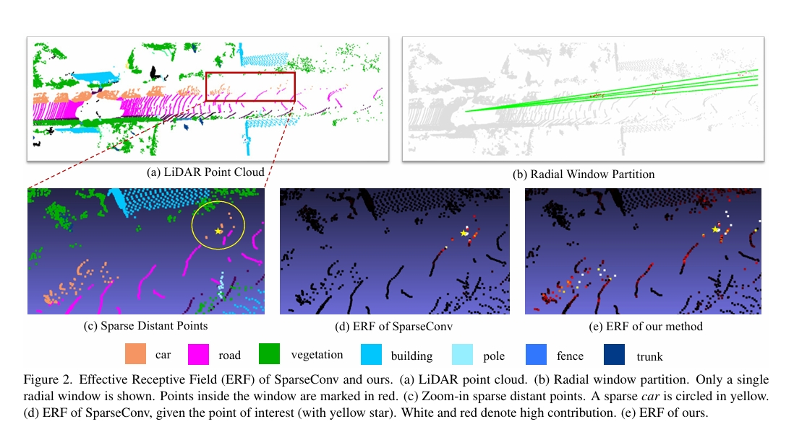

About Me
I am currently a PhD student at Computer Science and Engineering department, the Chinese University of Hong Kong (CUHK), under the supervision of Prof. Jiaya Jia and Prof. Chi-Wing Fu. Before that, I obtained my Bachelor's Degree at Shanghai Jiao Tong University (SJTU) in 2019.
My research interest includes reasoning VLMs and computer-use agents.
I will graduate in 2025 Fall and drop me an email if you are recruiting.
Publications
-
Seg-Zero: Reasoning-Chain Guided Segmentation via Cognitive Reinforcement
Yuqi Liu, Bohao Peng, Zhisheng Zhong, Zihao Yue, Fanbin Lu, Bei Yu, Jiaya Jia
- [Preprint, 2025] [Link] -
Progressively knowledge distillation via re-parameterizing diffusion reverse process
Xufeng Yao, Fanbin Lu, Yuechen Zhang, Xinyun Zhang, Wenqian Zhao, Bei Yu
- [AAAI, 2023] [Link] -
Removing anomalies as noises for industrial defect localization
Fanbin Lu, Xufeng Yao, Chi-Wing Fu, Jiaya Jia
- [ICCV, 2023] [Link] -

Spherical transformer for lidar-based 3d recognition
Xin Lai, Yukang Chen, Fanbin Lu, Jianhui Liu, Jiaya Jia
- [CVPR, 2023] [Link] -
 Boosting single-frame 3D object detection by simulating multi-frame point clouds
Boosting single-frame 3D object detection by simulating multi-frame point clouds
Wu Zheng, Li Jiang, Fanbin Lu, Yangyang Ye, Chi-Wing Fu
- [ACM MM, 2022] [Link]
Experience
Ph.D. student - CUHK, Hong Kong, 2021-now
Research Intern - SmartMore, Hong Kong, 2020-2025
Research Intern - Huawei, Shanghai, 2020
Selected Awards
- • National Scholarship of China (2%), 2017
- • Merit Student of SJTU (5%), 2017
- • YITU scholarship, 2017